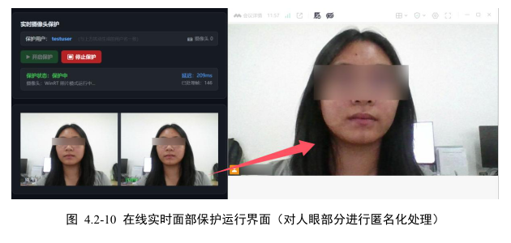
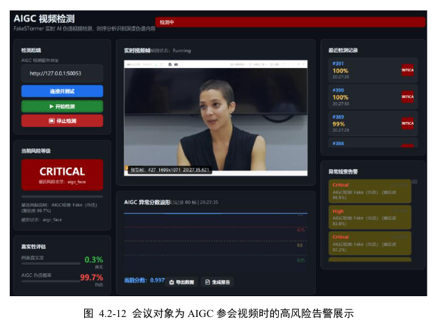
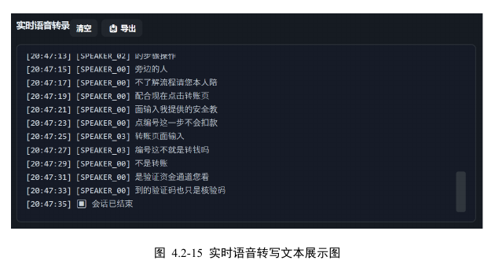

实时面部隐私保护
以离线通用扰动模板结合姿态自适应 UV 映射，在保持会议画面可用性的同时降低身份特征泄露风险。
结果来自作品设计文档中的实验与功能测试，覆盖隐私保护、视频检测、语音转写和语义研判。
从保护真实参会者，到识别虚假画面，再到定位风险话术及其发言主体。

以离线通用扰动模板结合姿态自适应 UV 映射，在保持会议画面可用性的同时降低身份特征泄露风险。

联合分析面部局部伪影与连续帧动态异常，对换脸、数字人和压缩传输后的伪造内容进行实时研判。

融合流式语音转写、大模型语义分析、敏感词规则与说话人表征，让风险事件可定位、可解释、可复盘。
Windows 客户端将音视频采集、低时延传输、AI 检测服务、即时告警和审计留痕连接为完整处理链。